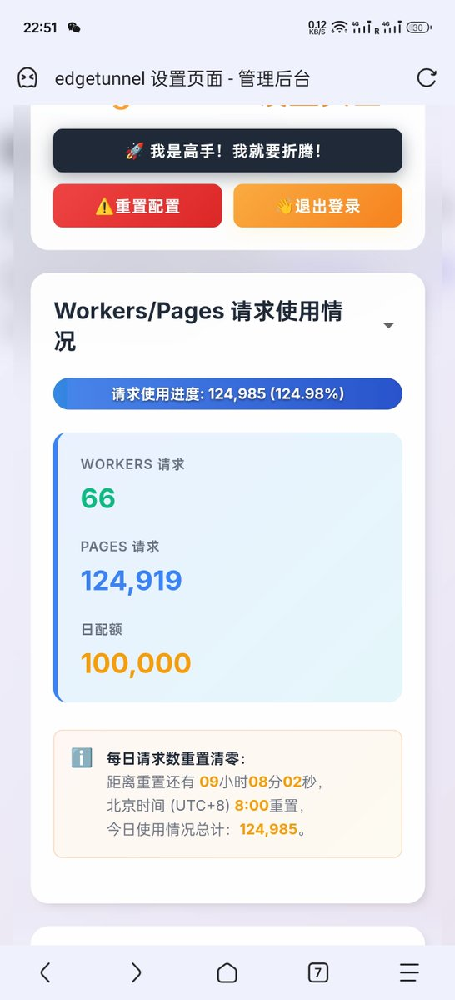

奶昔🥤
@realNyarime
@zhengyu89737964 看下有没有允许不安全sni，超过10万还是可以用的 官方文档写了只是超过10万之后不保证连接线
流量是无限，但每天只有100000的works/pages配额，用完就得等第二天刷新，晚上对移动网不太友好

Mik yuen
@zhengyu89737964
@realNyarime 前天搞了，節點沒個可以ping通的。不知道原因。